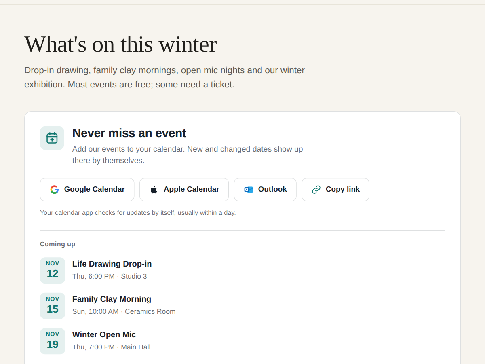

Calendar Subscribe: Events
Google Calendar and iCal feed of all your events
- One button adds every event to Google or Apple
- New, moved and cancelled events update by itself
- A calendar per category, like Youth (Premium)
- Outlook button and the next 3 events (Premium)

What it does
Your visitors keep asking to be told about the next event. This puts a "Subscribe to our calendar" box on your page with a Google Calendar button, an Apple Calendar button and a Copy link button. One press and every event you publish shows up in the visitor's own calendar.
The calendar is a live feed of your published events: title, date and time in the right time zone, the venue and its address, a short description and a link back to the event page for tickets. When you add an event, move it or cancel it, the subscribers' calendars change too. Calendar apps check for updates on their own, Google about once a day.
It works with weekly groups, workshop series, gigs, classes and club fixtures, anything you already publish as events. There is nothing to set up. Change the heading, the colours, the font, which buttons show, or switch to a one-line bar.
Free plan: one calendar of all upcoming events with Google, Apple and Copy link, plus a small credit link. Premium gives each event category its own calendar (only Youth groups, or only one city), adds an Outlook button and the next 3 events under the buttons, keeps the last 30 days in the feed and removes the credit link.
Price
Free
- Live calendar feed of all events
- Google + Apple + Copy link buttons
- Updates reach subscribers by itself
- Small credit link
Premium
$4/month, yearly 20% off
- One calendar per event category
- Outlook button + next 3 events
- Keep the last 30 days of events
- Remove the credit link